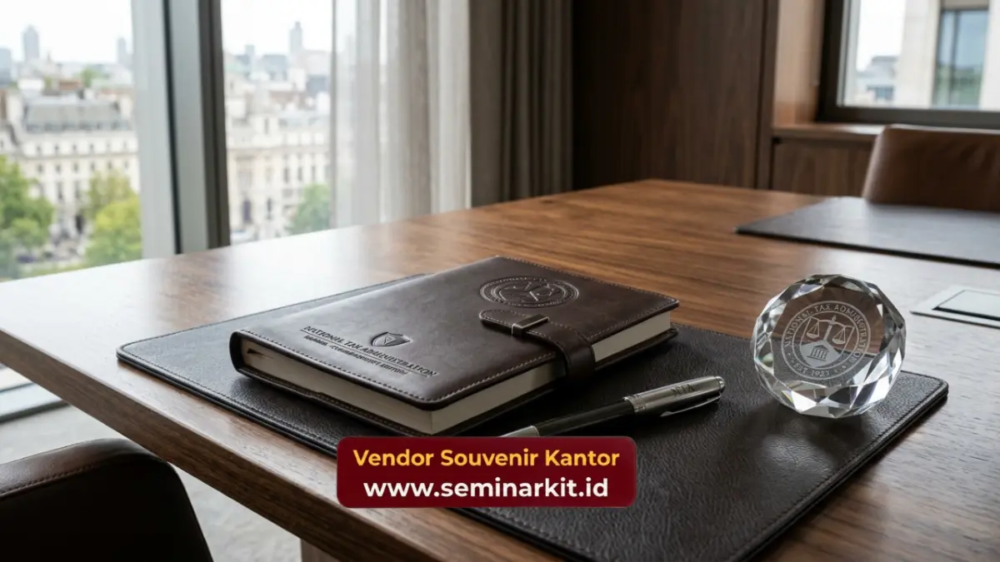

Produk-produk ini dirancang bukan sekadar sebagai pajangan, melainkan instrumen pendukung aktivitas harian para profesional yang berinteraksi dengan instansi tersebut. Kualitas material dan fungsionalitas menjadi tolok ukur utama dalam menentukan tingkat eksklusivitas sebuah apresiasi fisik.
- Set perlengkapan meja dari material premium memberikan kesan elegan dan profesional di ruang kerja.
- Aksesori berbasis teknologi sangat diminati karena mendukung mobilitas eksekutif modern.
- Barang berbahan kulit menawarkan durabilitas jangka panjang dan nilai estetika klasik.
- Kustomisasi halus sangat penting agar produk tetap terlihat mewah dan relevan.
Apa Saja Set Perlengkapan Eksekutif yang Cocok?
Set perlengkapan eksekutif yang cocok meliputi buku catatan berbalut kulit sintetis atau asli, pena berpenyeimbang logam berat, serta wadah kartu nama dengan sentuhan krom yang presisi. Kombinasi ini sangat merepresentasikan ketegasan dan profesionalisme.
Di lingkungan profesional tingkat tinggi, interaksi bisnis dan birokrasi masih sangat mengandalkan pencatatan fisik dan pertukaran kartu identitas. Oleh karena itu, membekali mitra kerja atau wajib pajak panutan dengan set agenda hardcover yang di-emboss secara halus dengan lambang institusi merupakan ide yang sangat taktis. Kertas yang digunakan di dalamnya harus memiliki gramasi tebal yang nyaman untuk ditulis menggunakan tinta basah maupun kering.
Agenda semacam ini biasanya dibawa ke berbagai rapat penting, sehingga secara langsung memberikan eksposur yang sangat positif terhadap instansi pemberinya. Menyandingkan agenda premium dengan pena logam memperkuat kesan eksklusif. Pena bukanlah sekadar alat tulis, bagi seorang eksekutif, pena dengan bobot yang tepat dan aliran tinta yang mulus adalah simbol penandatanganan kesepakatan penting.
Saat sebuah pena logam diukir menggunakan teknologi laser dengan nama instansi, ia berubah menjadi aset representasional yang bernilai tinggi. Untuk merealisasikan konsep-konsep produk eksklusif ini dalam acara institusi Anda berikutnya, konsultasikan segera kebutuhan produksi massal bersama vendorsouvenirkantor.web.id guna memastikan setiap unit memiliki kualitas yang merata.
Mengapa Integrasi Teknologi Menjadi Penting?
Integrasi teknologi menjadi penting karena para profesional saat ini memiliki mobilitas sangat tinggi, sehingga alat dukung seperti penyimpan daya portabel premium sangat membantu menjaga produktivitas harian mereka.
Aktivitas bisnis tidak lagi terbatas pada meja kerja di dalam ruangan. Para eksekutif, pengusaha, dan staf ahli seringkali harus bepergian dari satu pertemuan ke pertemuan lainnya. Kondisi ini membuat gawai menjadi perangkat utama, dan kehabisan daya adalah masalah besar. Oleh karena itu, power bank dengan kapasitas besar yang dibalut material elegan seperti matte black atau lapisan aluminium brushed menjadi cinderamata yang sangat cerdas. Ini menunjukkan bahwa instansi pemerintah modern sangat memahami dan responsif terhadap gaya hidup digital masyarakat saat ini.
Selain penyimpan daya portabel, perangkat penyimpan data dengan keamanan tinggi seperti flash drive berlapis logam tahan benturan juga masih memiliki tempat strategis. Desain flash drive saat ini bisa dipadukan dengan gantungan kunci atau klip kertas berbahan titanium. Penggabungan fungsi ganda ini meningkatkan frekuensi penggunaan barang tersebut. Agar alat-alat elektronik ini memenuhi standar keamanan pemerintah, penting untuk memastikan bahwa produk berasal dari rantai pasok terpercaya. Percayakan kebutuhan cinderamata teknologi instansi Anda kepada vendorsouvenirkantor.web.id yang senantiasa mengutamakan aspek keamanan dan ketahanan perangkat fungsional.

Bagaimana Material Kulit Menegaskan Wibawa?
Material kulit menegaskan wibawa melalui karakteristiknya yang klasik, tahan lama, dan memiliki proses penuaan material yang justru menambah estetika barang seiring waktu penggunaan yang terus-menerus.
Penggunaan kulit, baik asli maupun sintetis berkualitas sangat tinggi, selalu diasosiasikan dengan barang mewah dan keawetan. Barang-barang seperti map dokumen portofolio (compendium), gantungan kunci mobil, hingga dompet paspor adalah produk-status. Ketika institusi pajak menghadiahkan compendium kulit kepada wajib pajak besar, hadiah tersebut bukan sekadar barang, melainkan sebuah penghargaan atas kontribusi mereka terhadap negara.
Aroma khas kulit dan teksturnya yang lembut saat disentuh memberikan pengalaman indrawi yang menegaskan bahwa barang tersebut diproduksi secara serius. Keuntungan lain dari bahan kulit adalah fleksibilitasnya terhadap kustomisasi metode debossing atau embossing. Berbeda dengan sablon tinta yang akan terkelupas di atas bahan plastik, deboss pada kulit akan bertahan selama bahan itu sendiri utuh.
Logo instansi yang tercetak tenggelam di atas permukaan kulit gelap memberikan kesan maskulin, solid, dan sangat birokratis dalam makna yang paling positif. Untuk merancang aksesori berbahan kulit yang sempurna dan sesuai profil audiens instansi Anda, silakan lakukan pemesanan korporat melalui platform resmi vendorsouvenirkantor.web.id.

Banner promosi: klik gambar untuk langsung terhubung ke WhatsApp tim sales.